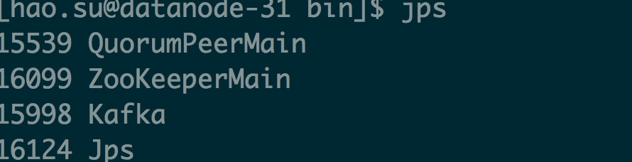
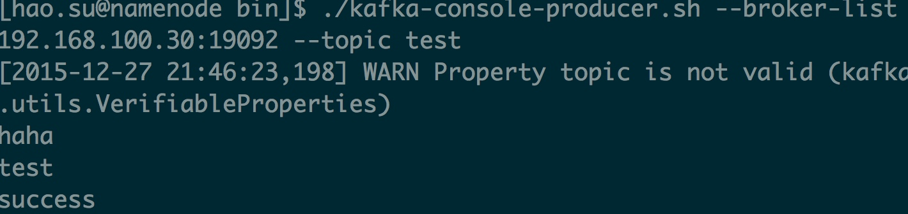
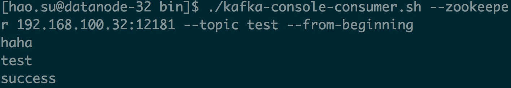
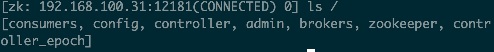

所需软件
- jdk 1.7
- kafka_2.11-0.8.2.2
- 已安装好的zk集群
- 服务器三台：192.168.100.30 192.168.100.31 192.168.100.32
kafa server.properties
Licensed to the Apache Software Foundation (ASF) under one or more
# contributor license agreements. See the NOTICE file distributed with
# this work for additional information regarding copyright ownership.
# The ASF licenses this file to You under the Apache License, Version 2.0
# (the "License"); you may not use this file except in compliance with
# the License. You may obtain a copy of the License at
#
# http://www.apache.org/licenses/LICENSE-2.0
#
# Unless required by applicable law or agreed to in writing, software
# distributed under the License is distributed on an "AS IS" BASIS,
# WITHOUT WARRANTIES OR CONDITIONS OF ANY KIND, either express or implied.
# See the License for the specific language governing permissions and
# limitations under the License.
# see kafka.server.KafkaConfig for additional details and defaults
############################# Server Basics #############################
# The id of the broker. This must be set to a unique integer for each broker.
broker.id=0
############################# Socket Server Settings #############################
# The port the socket server listens on
port=19092
# Hostname the broker will bind to. If not set, the server will bind to all interfaces
host.name=192.168.100.30
# Hostname the broker will advertise to producers and consumers. If not set, it uses the
# value for "host.name" if configured. Otherwise, it will use the value returned from
# java.net.InetAddress.getCanonicalHostName().
#advertised.host.name=<hostname routable by clients>
# The port to publish to ZooKeeper for clients to use. If this is not set,
# it will publish the same port that the broker binds to.
#advertised.port=<port accessible by clients>
# The number of threads handling network requests
num.network.threads=3
# The number of threads doing disk I/O
num.io.threads=8
# The send buffer (SO_SNDBUF) used by the socket server
socket.send.buffer.bytes=102400
# The receive buffer (SO_RCVBUF) used by the socket server
socket.receive.buffer.bytes=102400
# The maximum size of a request that the socket server will accept (protection against OOM)
socket.request.max.bytes=104857600
############################# Log Basics #############################
# A comma seperated list of directories under which to store log files
log.dirs=/home/hao.su/kafka/kafkalogs
# The default number of log partitions per topic. More partitions allow greater
# parallelism for consumption, but this will also result in more files across
# the brokers.
num.partitions=2
# The number of threads per data directory to be used for log recovery at startup and flushing at shutdown.
# This value is recommended to be increased for installations with data dirs located in RAID array.
num.recovery.threads.per.data.dir=1
############################# Log Flush Policy #############################
# Messages are immediately written to the filesystem but by default we only fsync() to sync
# the OS cache lazily. The following configurations control the flush of data to disk.
# There are a few important trade-offs here:
# 1. Durability: Unflushed data may be lost if you are not using replication.
# 2. Latency: Very large flush intervals may lead to latency spikes when the flush does occur as there will be a lot of data to flush.
# 3. Throughput: The flush is generally the most expensive operation, and a small flush interval may lead to exceessive seeks.
# The settings below allow one to configure the flush policy to flush data after a period of time or
# every N messages (or both). This can be done globally and overridden on a per-topic basis.
# The number of messages to accept before forcing a flush of data to disk
#log.flush.interval.messages=10000
# The maximum amount of time a message can sit in a log before we force a flush
#log.flush.interval.ms=1000
############################# Log Retention Policy #############################
# The following configurations control the disposal of log segments. The policy can
# be set to delete segments after a period of time, or after a given size has accumulated.
# A segment will be deleted whenever *either* of these criteria are met. Deletion always happens
# from the end of the log.
# The minimum age of a log file to be eligible for deletion
log.retention.hours=168
message.max.byte=5048576
#副本数
default.replication.factor=2
socket.fetch.max.bytes=5048576
# A size-based retention policy for logs. Segments are pruned from the log as long as the remaining
# segments don't drop below log.retention.bytes.
#log.retention.bytes=1073741824
# The maximum size of a log segment file. When this size is reached a new log segment will be created.
log.segment.bytes=1073741824
# The interval at which log segments are checked to see if they can be deleted according
# to the retention policies
log.retention.check.interval.ms=300000
# By default the log cleaner is disabled and the log retention policy will default to just delete segments after their retention expires.
# If log.cleaner.enable=true is set the cleaner will be enabled and individual logs can then be marked for log compaction.
log.cleaner.enable=false
############################# Zookeeper #############################
# Zookeeper connection string (see zookeeper docs for details).
# This is a comma separated host:port pairs, each corresponding to a zk
# server. e.g. "127.0.0.1:3000,127.0.0.1:3001,127.0.0.1:3002".
# You can also append an optional chroot string to the urls to specify the
# root directory for all kafka znodes.
zookeeper.connect=192.168.100.30:12181,192.168.100.31:12181,192.168.100.32:12181
# Timeout in ms for connecting to zookeeper
zookeeper.connection.timeout.ms=6000
将以上配置复制到另外两台服务器，只需修改对应的ip地址,broker_id即可
启动kafka
在三台服务器上执行以下命令
./kafka-server-start.sh -daemon ../config/server.properties
运行jps命令查看：

如图所示 有kafka进程
在任意一条机器上运行produce程序
./kafka-topics.sh --list --zookeeper localhost:12181
在另一台机器上运行consumer程序
./kafka-console-consumer.sh --zookeeper 192.168.100.32:12181 --topic test --from-beginning
在produce中输入内容，将在consumer中显示，效果如下
-

证明kafka集群搭建成功
进入zk客户端查看目录
./zkCli.sh -server 192.168.100.31:12181

可以查看相应目录的内容